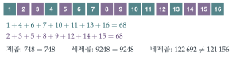

STEP I 1992, 문제 5
계속 읽기 전에 문제를 먼저 읽어 보자. 문제는 STEP Support Programme의 문제 데이터베이스에 있다: step.maths.org/questions/92-s1-q5
도입
\(1\)부터 \(16\)까지의 수를 여덟 개씩 두 팀으로 나누어 보자. \[\{1, 4, 6, 7, 10, 11, 13, 16\} \quad\text{그리고}\quad \{2, 3, 5, 8, 9, 12, 14, 15\}.\] 두 팀의 합은 모두 \(68\)이다. 제곱의 합은 둘 다 \(748\)이다. 세제곱의 합은 둘 다 \(9248\)이다. 우연이 아니고서야 이럴 수 없을 것 같지만, 사실 이것은 끝없이 이어지는 패턴의 세 번째 단계일 뿐이다. \(1\)부터 \(32\)까지를 올바르게 나누면 네제곱의 합까지 같아진다.
이렇게 나누는 방법은 1851년에 Eugène Prouhet가 발견했으며, 그 배후의 규칙인 투에–모스 수열(Thue–Morse sequence)은 놀라울 만큼 다양한 곳에 등장한다. 정수론, 계산 이론, 체스, 그리고 가장 공정하게 차례를 정하는 방법에서도 나타난다. 이 문제는 다항식(polynomial)과 그 도함수(derivative)를 통해 이 수열을 드러낸다.
시작하기 전에
다항식 \(\mathrm{p}(x) = \sum c_kx^k\)가 \(\mathrm{p}(1) = 0\)을 만족하면 계수(coefficient)에 대해 무엇을 알 수 있는가? \(\mathrm{p}'(1) = 0\)이면 어떤가?
\(\mathrm{p}(1) = \sum c_k\)이므로 \(\mathrm{p}(1) = 0\)은 계수의 합이 \(0\)이라는 뜻이다. 또 \(\mathrm{p}'(x) = \sum kc_kx^{k-1}\)이므로 \(\mathrm{p}'(1) = \sum kc_k\)이다. 계수가 모두 \(\pm1\)이라면, 이 조건들은 \(+1\)이 놓인 위치와 \(-1\)이 놓인 위치의 개수가 같고, 그 위치들의 합도 같다는 뜻이다.
차근차근 풀기
단계 1 삼중근
\(1 - x^2\)와 \(1 - x^4\)를 인수분해(factorise)하라. \(1 - x\)라는 인수가 몇 번 나타나는가?
\(1 - x^2 = (1 - x)(1 + x)\)이고 \(1 - x^4 = (1 - x)(1 + x)(1 + x^2)\)이므로 \[\mathrm{p}_0(x) = (1 - x)^3(1 + x)^2(1 + x^2),\] 따라서 \((1 - x)^3\)은 인수이다.■
단계 2 \(1\)에서의 도함수 값
\((1 - x)^3\)이 \(\mathrm{p}_0\)를 나누어떨어뜨리면, \((1 - x)\)의 몇 제곱이 \(\mathrm{p}_0'\)를 나누어떨어뜨리는가? 그렇다면 \(\mathrm{p}_1 = x\mathrm{p}_0'\)와 \(\mathrm{p}_1'\)는 어떤가?
\(\mathrm{p}_0(x) = (1 - x)^3\mathrm{q}(x)\)로 쓰자. 곱의 미분법(product rule)에 의해 \(\mathrm{p}_0'(x) = -3(1 - x)^2\mathrm{q}(x) + (1 - x)^3\mathrm{q}'(x)\)이고, 이는 \((1 - x)^2\)을 인수로 가진다. 따라서 \(\mathrm{p}_0'(1) = 0\)이다. 그러면 \(\mathrm{p}_1(x) = x\mathrm{p}_0'(x)\)도 \((1 - x)^2\)을 인수로 가지며, 같은 논증으로 \(\mathrm{p}_1'\)가 \((1 - x)\)를 인수로 가짐을 알 수 있으므로 \(\mathrm{p}_1'(1) = 0\)이다.■
단계 3 계수 읽어 내기
전개하면 \((1 - x)(1 - x^2) = 1 - x - x^2 + x^3\)이고, 이어서 \[\mathrm{p}_0(x) = 1 - x - x^2 + x^3 - x^4 + x^5 + x^6 - x^7.\]
\(\mathrm{p}_0'(1)\)과 \(\mathrm{p}_1'(1)\)을 계수 \(c_k\)로 나타내면 무엇인가?
\(\mathrm{p}_1(x) = x\mathrm{p}_0'(x) = \sum kc_kx^k\)이므로 \(\mathrm{p}_1'(1) = \sum k^2c_k\)이다. 계수는 \(k = 0, 3, 5, 6\)에서 \(+1\)이고 \(k = 1, 2, 4, 7\)에서 \(-1\)이다. 따라서 \(\mathrm{p}_0'(1) = 0\)과 \(\mathrm{p}_1'(1) = 0\)은 \[\begin{aligned} 0 + 3 + 5 + 6 &= 1 + 2 + 4 + 7 \quad (= 14), \\ 0^2 + 3^2 + 5^2 + 6^2 &= 1^2 + 2^2 + 4^2 + 7^2 \quad (= 70), \end{aligned}\] 을 뜻하며, 여기서 \(0\)을 빼면 바로 요구된 항등식이다.■
단계 4 인수 하나 더
세제곱의 합까지 같게 만들려면 \((1 - x)\)라는 인수가 네 번째로 필요하다. \(\mathrm{p}_0\) 대신 어떤 다항식을 써야 할까?
\(\mathrm{P}(x) = (1 - x)(1 - x^2)(1 - x^4)(1 - x^8)\)을 잡자. 이 다항식은 \((1 - x)^4\)을 인수로 가진다. 그 계수는 \(\mathrm{p}_0(x) - x^8\mathrm{p}_0(x)\)의 계수이다. 즉 \(0\)부터 \(7\)까지의 부호 패턴 다음에, \(8\)부터 \(15\)까지 같은 패턴의 부호를 뒤집은 것이 이어진다. \[\begin{array}{l*{16}{c}} k & 0 & 1 & 2 & 3 & 4 & 5 & 6 & 7 & 8 & 9 & 10 & 11 & 12 & 13 & 14 & 15 \\ c_k & + & - & - & + & - & + & + & - & - & + & + & - & + & - & - & + \end{array}\] 2단계의 논증을 한 번 더 적용하면 \(r = 0, 1, 2, 3\)에 대해 \(\sum c_k k^r = 0\)임을 알 수 있다. \(+\) 위치 \(\{0, 3, 5, 6, 9, 10, 12, 15\}\)와 \(-\) 위치 \(\{1, 2, 4, 7, 8, 11, 13, 14\}\)를 잡자. \(r = 1, 2, 3\)일 때 \(0\)에서 오는 항은 \(0\)이므로 빼도 된다. 따라서 다음 순서 \[a_1, \ldots, a_8 = 1, 2, 4, 7, 8, 11, 13, 14, \qquad a_9, \ldots, a_{15} = 3, 5, 6, 9, 10, 12, 15\] 가 조건을 만족한다. 두 부분의 합은 모두 \(60\), 제곱의 합은 \(620\), 세제곱의 합은 \(7200\)이다.■
돌아보기
도함수는 중근을 찾아낸다. 인수 \((1 - x)^m\)이 있으면 처음 \(m - 1\)개의 도함수가 \(x = 1\)에서 모두 \(0\)이 된다.
미분하기 전에 \(x\)를 곱하면 \(\sum kc_k\)가 \(\sum k^2c_k\)로 바뀌고, 같은 방식으로 더 높은 거듭제곱으로 나아간다.
두 배 늘리기. 인수 \((1 - x^{2^m})\)을 하나 더할 때마다 길이가 두 배가 되고, 합이 같아지는 거듭제곱이 하나 늘어났다.
숨은 수학
투에–모스 수열
\((1 - x)(1 - x^2)(1 - x^4)(1 - x^8)\cdots\)의 계수의 부호는 투에–모스 수열을 이룬다. \(+\)를 \(0\)으로, \(-\)를 \(1\)로 쓰면 다음과 같다. \[0\,1\,1\,0\;1\,0\,0\,1\;1\,0\,0\,1\;0\,1\,1\,0\;\ldots\] 이 수열은 서로 동치인 세 가지 방식으로 설명할 수 있다.
두 배 늘리기: \(0\)에서 시작하여, 지금까지 얻은 것의 보수(complement, \(0\)과 \(1\)을 맞바꾼 것)를 계속 뒤에 붙인다: \(0 \to 01 \to 0110 \to 01101001 \to \cdots\).
이진법 자릿수: \(k\)번째 항은 \(k\)를 이진법(binary)으로 썼을 때 \(1\)의 개수가 짝수이면 \(0\), 홀수이면 \(1\)이다. (그래서 \(x^k\)의 부호가 \((-1)^{\text{이진법으로 쓴 다음 수에 있는 1의 개수: } k}\)인 것이다. 곱에서 \(x^k\)를 만들려면 \(k\)의 이진 표현을 이루는 인수 \(x^{2^m}\)들을 골라야 하고, 각 인수가 마이너스 부호를 하나씩 가져온다.)
다항식: 문제에서처럼 \(\prod_m (1 - x^{2^m})\)의 계수이다.
\(0, 1, \ldots, 2^{N} - 1\)을 투에–모스 수열에 따라 나누면, 모든 \(r < N\)에 대해 \(r\)제곱의 합이 같은 두 집합을 얻는다(그림 9.7.1). 이것이 프루에–태리–에스콧 문제(Prouhet–Tarry–Escott problem)이다. 즉 \(r = 1, \ldots, k\)에 대해 \(r\)제곱의 합이 같은 서로 다른 두 정수 집합을 찾는 문제이다. Prouhet의 풀이는 \(2^{k+1}\)개의 수를 사용한다. 실제로 최소 몇 개의 수가 필요한지 알아내는 것은 유명한 미해결 문제이다.

가장 공정하게 차례를 정하는 방법
두 아이가 사탕 더미에서 좋은 것부터 번갈아 고른다고 하자. \(ABABAB\ldots\) 순서로 번갈아 고르면 \(A\)가 매 쌍에서 언제나 더 좋은 사탕을 가져가므로 체계적으로 유리하다. \(ABBA\) 순서가 더 공정하고, \(ABBABAAB\)는 그보다 더 공정하다. 이것이 바로 투에–모스 수열이며, 거듭제곱의 합이 같다는 성질이 정확히 그 이유이다. 사탕의 가치가 위치에 대한 매끄러운 함수로 주어진다면, 그 함수를 다항식으로 전개해 보면 투에–모스 순서가 앞쪽의 주요 항들을 상쇄한다는 것을 알 수 있다. 같은 아이디어가 축구의 승부차기에도 제안되었으며(축구 규칙 제정 기구가 2017년부터 시험한 “\(ABBA\)” 순서), 테니스 타이브레이크의 서브 순서에도 쓰인다.
이 수열은 여러 번 거듭 발견되었다. Prouhet가 1851년에 이 수열을 사용했다. Axel Thue는 1912년에 반복 패턴이 없는 수열을 연구하다가 이 수열을 다시 발견했다. 이 수열에는 같은 블록이 세 번 연달아 나타나는 일이 결코 없다(“세제곱이 없는(cube-free)” 수열이다). Marston Morse는 1921년에 곡면 위의 측지선(geodesic)을 연구하다가 이 수열을 또다시 발견했다. 그리고 체스 세계 챔피언 Max Euwe는 1929년에 이 수열을 이용하여, 당시 시행되던 반복에 의한 무승부 규칙으로는 무한히 긴 게임을 막을 수 없음을 보였다. 오늘날 이 수열은 자동 수열(automatic sequence), 즉 \(n\)의 이진법 자릿수를 읽는 간단한 기계로 계산되는 수열 이론의 핵심적인 예이다.
사고 기술
거듭제곱의 합이 같다는 것은 \(+\) 부호와 \(-\) 부호가 어디에 놓이느냐의 문제이다. 그 부호들을 계수로 하는 다항식을 만들면, 이 성질이 근(root)에 관한 명제로 바뀐다.
이 문제는 결코 일일이 찾아보라고 요구하지 않는다. \(x = 1\)에서의 중근(repeated root)이 모든 일을 해 준다. 조합적 대상을 시행착오로 찾는 대신 대수를 이용해 만들어 내는 것은 대학 조합론(combinatorics)에서 거듭 등장하는 아이디어이다.
더 도전하기
평행이동. STEP II 2025, 문제 8 (OCR에서 내려받는 2025년 시험지 묶음, zip 파일)에 도전해 보라. 합과 제곱의 합이 같아지도록 나눈 것에서, 한 목록을 평행이동하여 결합함으로써 세제곱의 합까지 같아지는 더 큰 분할을 만드는 방법을 보여 준다.
제곱수의 제곱. (이 문제도 STEP II, 2025에서 나왔다.) 집합 \(A = \{1, 3, 4, 5, 9, 11\}\)과 \(B = \{2, 6, 7, 8, 10\}\)은 합이 같고 제곱의 합도 같다. 모든 양의 정수 \(n\)에 대해 \(\{n^2, (n + 1)^2, \ldots, (n + 11)^2\}\)을 합이 같은 두 집합으로 나누어라. (힌트: 두 번째 집합에 \(0\)을 추가하라.)
평행이동 불변성(translation invariance). 두 수 집합이 \(r = 0, 1, \ldots, k\)에 대해 \(r\)제곱의 합이 같으면, 모든 원소에 같은 수 \(c\)를 더해 얻은 집합들도 그러함을 보여라. 이로부터 문제의 집합 \(\{1, \ldots, 15\}\)를 임의의 연속한 \(16\)개의 정수로 바꾸어도 된다는 것은 왜인가?
공정한 사탕. 사탕의 가치가 \(1, \frac12, \frac13, \ldots, \frac18\)이다. \(ABABABAB\) 순서와 \(ABBABAAB\) 순서에서 \(A\)가 얻는 총합을 비교하라.
더 읽을거리
Jean-Paul Allouche & Jeffrey Shallit, “The ubiquitous Prouhet–Thue–Morse sequence”, Sequences and Their Applications (Springer, 1999) 수록. 이 수열이 등장하는 수많은 곳을 개관한 글로, 온라인에서 무료로 볼 수 있다.
Matt Parker, Things to Make and Do in the Fourth Dimension (Penguin). 거듭제곱의 합이 같은 집합을 비롯한 여러 수의 신기한 성질을 다룬다.
Joshua Cooper & Aaron Dutle, “Greedy Galois games”, American Mathematical Monthly 120 (2013). 공정한 차례 정하기와 투에–모스 수열을 다룬다.